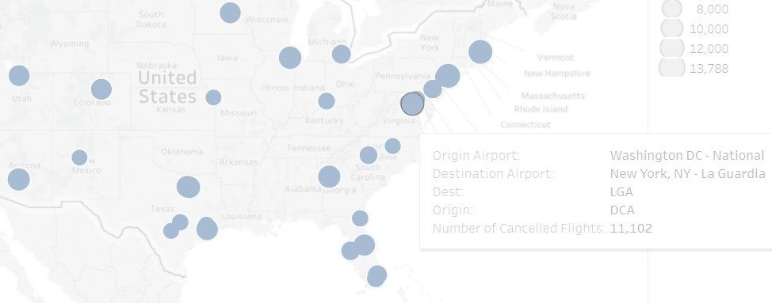

Ayumi Ohashi
Projects
from
Business Analyst
at Nanodegree Programs at Udacity
Analyze data and build predictive models using Alteryx.
Projects
from
Data Analyst
at Nanodegree Programs at Udacity
Discover insights from data and create dashboards with Python, R, SQL, and Tableau.